Measurement Classes
The Time Tagger library includes several classes that implement various measurements. All measurements are derived from a base class called IteratorBase that is described further down. As the name suggests, it uses the iterator programming concept.
All measurements provide a set of methods to start and stop the execution and to access the accumulated data. In a typical application, the following steps are performed (see example):
Create an instance of a measurement
Wait for some time
Retrieve the data accumulated by the measurement by calling a
.getData()method.
Available measurement classes
Note
In MATLAB, the Measurement names have common prefix TT*. For example: Correlation is named as TTCorrelation. This prevents possible name collisions with existing MATLAB or user functions.
- Correlation
Auto- and Cross-correlation measurement.
- CountBetweenMarkers
Counts tags on one channel within bins which are determined by triggers on one or two other channels. Uses a static buffer output. Use this to implement a gated counter, a counter synchronized to external signals, etc.
- Counter
Counts the clicks on one or more channels with a fixed bin width and a circular buffer output.
- Countrate
Average tag rate on one or more channels.
- Flim
Fluorescence lifetime imaging.
- FrequencyStability
Analyzes the frequency stability of period signals.
- IteratorBase
Base class for implementing custom measurements (only C++).
- Histogram
A simple histogram of time differences. This can be used to measure lifetime, for example.
- Histogram2D
A 2-dimensional histogram of correlated time differences. This can be used in measurements similar to 2D NRM spectroscopy. (Single-Start, Single-Stop)
- HistogramND
A n-dimensional histogram of correlated time differences. (Single-Start, Single-Stop)
- HistogramLogBins
Accumulates time differences into a histogram with logarithmic increasing bin sizes.
- Scope
Detects the rising and falling edges on a channel to visualize the incoming signals similar to an ultrafast logic analyzer.
- StartStop
Accumulates a histogram of time differences between pairs of tags on two channels. Only the first stop tag after a start tag is considered. Subsequent stop tags are discarded. The histogram length is unlimited. Bins and counts are stored in an array of tuples. (Single-Start, Single-Stop)
- TimeDifferences
Accumulates the time differences between tags on two channels in one or more histograms. The sweeping through of histograms is optionally controlled by one or two additional triggers.
- TimeDifferencesND
A multidimensional implementation of the TimeDifferences measurement for asynchronous next histogram triggers.
- SynchronizedMeasurements
Helper class that allows synchronization of the measurement classes.
- Dump
Deprecated - please use
FileWriterinstead. Dump measurement writes all time-tags into a file.- TimeTagStream
This class provides you with access to the time-tag stream and allows you to implement your own on-the-fly processing. See Raw Time-Tag-Stream access to get on overview about the possibilities for the raw time-tag-stream access.
- Sampler
The Sampler class allows sampling the state of a set of channels via a trigger channel.
- FileWriter
This class writes time-tags into a file with a lossless compression. It replaces the
Dumpclass.- FileReader
Allows you to read time-tags from a file written by the
FileWriter.
Common methods
- class IteratorBase
- clear()
Discards accumulated measurement data, initializes the data buffer with zero values, and resets the state to the initial state.
- start()
Starts or continues data acquisition. This method is implicitly called when a measurement object is created.
- startFor(duration[, clear=True])
Starts or continues the data acquisition for the given duration (in ps). After the duration time, the method
stop()is called andisRunning()will return False. Whether the accumulated data is cleared at the beginning ofstartFor()is controlled with the second parameter clear, which is True by default.
- stop()
After calling this method, the measurement will stop processing incoming tags. Use
start()orstartFor()to continue or restart the measurement.
- isRunning()
Returns True if the measurement is collecting the data. This method will return False if the measurement was stopped manually by calling
stop()or automatically after callingstartFor()and the duration has passed.Note
All measurements start accumulating data immediately after their creation.
- Returns:
True/False
- Return type:
- waitUntilFinished(timeout=-1)
Blocks the execution until the measurement has finished. Can be used with
startFor().
- getCaptureDuration()
Total capture duration since the measurement creation or last call to
clear().- Returns:
Capture duration in ps
- Return type:
- getConfiguration()
Returns configuration data of the measurement object. The configuration includes the measurement name, and the values of the current parameters. Information returned by this method is also provided with
TimeTaggerBase.getConfiguration().- Returns:
Configuration data of the measurement object.
- Return type:
Event counting
Countrate
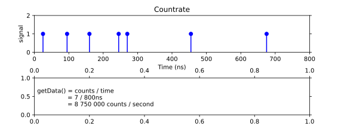Measures the average count rate on one or more channels. Specifically, it
determines the counts per second on the specified channels starting from the very first tag arriving after the instantiation or last call to clear() of the measurement.
The Countrate works correctly even when the USB transfer rate or backend processing capabilities are exceeded.
- class Countrate(tagger, channels)
- Parameters:
tagger (TimeTaggerBase) – time tagger object instance
channels (list[int]) – channels for which the average count rate is measured
Counter
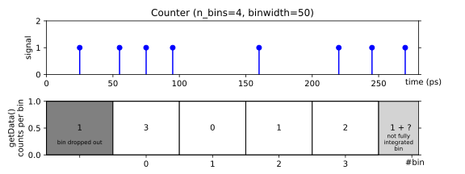Time trace of the count rate on one or more channels.
Specifically, this measurement repeatedly counts tags within a
time interval binwidth and stores the results in a two-dimensional array of size number of channels by n_values.
The incoming data is first accumulated in a not-accessible bin.
When the integration time of this bin has passed, the accumulated data is added to the internal buffer, which can be accessed via the getData… methods.
Data stored in the internal circular buffer is overwritten when n_values are exceeded. You can prevent this by automatically stopping the measurement in time as follows counter.startFor(duration=binwidth*n_values).
- class Counter(tagger, channels, binwidth, n_values)
- Parameters:
tagger (TimeTaggerBase) – time tagger object
binwidth (int) – bin width in ps
n_values (int) – number of bins (data buffer size)
- getData([rolling=True])
Returns an array of accumulated counter bins for each channel. The optional parameter rolling, controls if the not integrated bins are padded before or after the integrated bins.
When
rolling=True, the most recent data is stored in the last bin of the array and every new completed bin shifts all other bins right-to-left. When continuously plotted, this creates an effect of rolling trace plot. For instance, it is useful for continuous monitoring of countrate changes over time.When
rolling=False, the most recent data is stored in the next bin after previous such that the array is filled up left-to-right. When array becomes full and the Counter is still running, the array index will be reset to zero and the array will be filled again overwriting previous values. This operation is sometimes called “sweep plotting”.
- getIndex()
- Returns:
A vector of size n_values containing the time bins in ps.
- Return type:
1D_array[int]
- getDataNormalized([rolling=True])
Does the same as
getData()but returns the count rate in Hz as a float. Not integrated bins and bins in overflow mode are marked as NaN.- Return type:
2D_array[float]
- getDataTotalCounts()
Returns total number of events per channel since the last call to
clear(), including the currently integrating bin. This method works correctly even when the USB transfer rate or backend processing capabilities are exceeded.- Returns:
Number of events per channel.
- Return type:
1D_array[int]
- getDataObject(remove=False)
Returns
CounterDataobject containing a snapshot of the data accumulated in theCounterat the time this method is called.- Parameters:
remove (bool) – Controls if the returned data shall be removed from the internal buffer.
- Returns:
An object providing access to a snapshot data.
- Return type:
- class CounterData
Objects of this class are created and returned by
Counter.getDataObject(), and contain a snapshot of the data accumulated by theCountermeasurement.- dropped_bins: int
Number of bins which have been dropped because n_values of the
Counterhas been exceeded.
- getIndex()
- getData()
- getDataNormalized()
Does the same as
getData()but returns the count rate in counts/second. Bins in overflow mode are marked as NaN.- Return type:
2D_array[float]
- getDataTotalCounts()
Returns the total number of events per channel since the last call to
clear(), excluding the counts of the internal bin where data is currently integrated into. This method works correctly even when the USB transfer rate or backend processing capabilities are exceeded.- Returns:
Number of events per channel.
- Return type:
1D_array[int]
- getTime()
- Returns:
A vector of size
sizecontaining the time corresponding to the return value ofCounterData.getData()in ps.- Return type:
1D_array[int]
CountBetweenMarkers
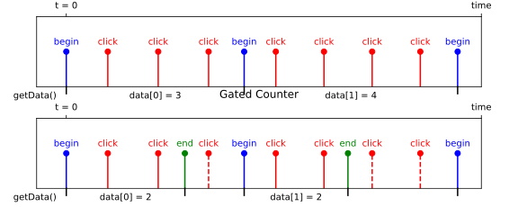Counts events on a single channel within the time indicated by a “start” and “stop” signals. The bin edges between which counts are accumulated are determined by one or more hardware triggers. Specifically, the measurement records data into a vector of length n_values (initially filled with zeros).
It waits for tags on the begin_channel. When a tag is detected on the begin_channel it starts counting tags on the click_channel. When the next tag is detected on the begin_channel it stores the current counter value as the next entry in the data vector, resets the counter to zero and starts accumulating counts again. If an end_channel is specified, the measurement stores the current counter value and resets the counter when a tag is detected on the end_channel rather than the begin_channel. You can use this, e.g., to accumulate counts within a gate by using rising edges on one channel as the begin_channel and falling edges on the same channel as the end_channel. The accumulation time for each value can be accessed via getBinWidths().
The measurement stops when all entries in the data vector are filled.
- class CountBetweenMarkers(tagger, click_channel, begin_channel, end_channel, n_values)
- Parameters:
tagger (TimeTaggerBase) – time tagger object
click_channel (int) – channel on which clicks are received, gated by begin_channel and end_channel
begin_channel (int) – channel that triggers the beginning of counting and stepping to the next value
end_channel (int) – channel that triggers the end of counting (optional, default:
CHANNEL_UNUSED)n_values (int) – number of values stored (data buffer size)
- getData()
- Returns:
Array of size n_values containing the acquired counter values.
- Return type:
1D_array[int]
- getIndex()
- Returns:
Vector of size n_values containing the time in ps of each start click in respect to the very first start click.
- Return type:
1D_array[int]
Time histograms
This section describes various measurements that calculate time differences between events and accumulate the results into a histogram.
StartStop
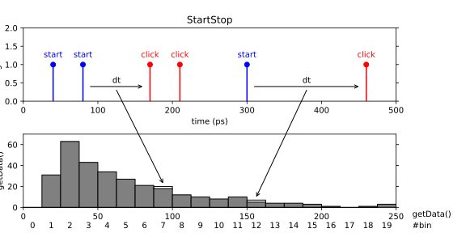A simple start-stop measurement. This class performs a start-stop measurement between two channels and stores the time differences in a histogram. The histogram resolution is specified beforehand (binwidth) but the histogram range (number of bins) is unlimited. It is adapted to the largest time difference that was detected. Thus, all pairs of subsequent clicks are registered. Only non-empty bins are recorded.
- class StartStop(tagger, click_channel, start_channel, binwidth)
- Parameters:
tagger (TimeTaggerBase) – time tagger object instance
click_channel (int) – channel on which stop clicks are received
start_channel (int) – channel on which start clicks are received
binwidth (int) – bin width in ps
Histogram
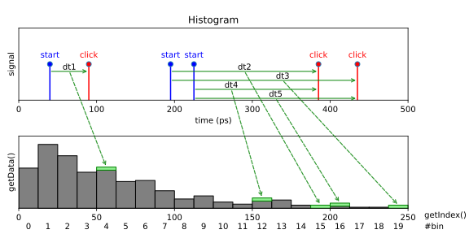Accumulate time differences into a histogram. This is a simple multiple start, multiple stop measurement. This is a special case of the more general TimeDifferences measurement. Specifically, the measurement waits for clicks on the start_channel, and for each start click, it measures the time difference between the start clicks and all subsequent clicks on the click_channel and stores them in a histogram. The histogram range and resolution are specified by the number of bins and the bin width specified in ps. Clicks that fall outside the histogram range are ignored. Data accumulation is performed independently for all start clicks. This type of measurement is frequently referred to as a ‘multiple start, multiple stop’ measurement and corresponds to a full auto- or cross-correlation measurement.
- class Histogram(tagger, click_channel, start_channel, binwidth, n_bins)
- Parameters:
tagger (TimeTaggerBase) – time tagger object instance
click_channel (int) – channel on which clicks are received
start_channel (int) – channel on which start clicks are received
binwidth (int) – bin width in ps
n_bins (int) – the number of bins in the histogram
HistogramLogBins
The HistogramLogBins measurement is similar to Histogram but the bin widths are spaced logarithmically.

- class HistogramLogBins
- Parameters:
tagger (TimeTaggerBase) – time tagger object instance
click_channel (int) – channel on which clicks are received
start_channel (int) – channel on which start clicks are received
exp_start (float) – exponent
10^exp_startin seconds where the very first bin beginsexp_stop (float) – exponent
10^exp_stopin seconds where the very last bin endsn_bins (int) – the number of bins in the histogram
Note
After initializing the measurement (or after an overflow) no data is accumulated in the histogram until the full histogram duration has passed to ensure a balanced count accumulation over the full histogram.
- getData()
- Returns:
A one-dimensional array of size n_bins containing the histogram.
- Return type:
1D_array[int]
- getDataNormalizedCountsPerPs()
- Returns:
The counts normalized by the binwidth of each bin.
- Return type:
1D_array[float]
- getDataNormalizedG2()
The counts normalized by the binwidth of each bin and the average count rate. This matches the implementation of
Correlation.getDataNormalized()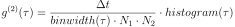
where 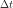 is the capture duration, 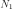 and 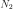 are number of events in each channel.
- Returns:
The counts normalized by the binwidth of each bin and the average count rate.
- Return type:
1D_array[float]
Histogram2D
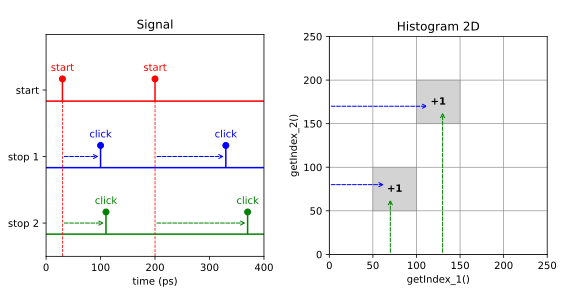This measurement is a 2-dimensional version of the Histogram measurement. The measurement accumulates a two-dimensional histogram where stop signals from two separate channels define the bin coordinate. For instance, this kind of measurement is similar to that of typical 2D NMR spectroscopy. The data within the histogram is acquired via a single-start, single-stop analysis for each axis. The first stop click of each axis is taken after the start click to evaluate the histogram counts.
- class Histogram2D(tagger, start_channel, stop_channel_1, stop_channel_2, binwidth_1, binwidth_2, n_bins_1, n_bins_2)
- Parameters:
tagger (TimeTaggerBase) – time tagger object
start_channel (int) – channel on which start clicks are received
stop_channel_1 (int) – channel on which stop clicks for the time axis 1 are received
stop_channel_2 (int) – channel on which stop clicks for the time axis 2 are received
binwidth_1 (int) – bin width in ps for the time axis 1
binwidth_2 (int) – bin width in ps for the time axis 2
n_bins_1 (int) – the number of bins along the time axis 1
n_bins_2 (int) – the number of bins along the time axis 2
- getData()
- Returns:
A two-dimensional array of size n_bins_1 by n_bins_2 containing the 2D histogram.
- Return type:
2D_array[int]
- getIndex()
Returns a 3D array containing two coordinate matrices (meshgrid) for time bins in ps for the time axes 1 and 2. For details on meshgrid please take a look at the respective documentation either for Matlab or Python NumPy.
- Returns:
A three-dimensional array of size n_bins_1 x n_bins_2 x 2
- Return type:
3D_array[int]
HistogramND
This measurement is the generalisation of Histogram2D to an arbitrary number of dimensions.
The data within the histogram is acquired via a single-start, single-stop analysis for each axis.
The first stop click of each axis is taken after the start click to evaluate the histogram counts.
HistogramND can be used as a 1D Histogram with single-start single-stop behavior.
- class HistogramND(tagger, start_channel, stop_channels, binwidths, n_bins)
- Parameters:
tagger (TimeTagger) – time tagger object
start_channel (int) – channel on which start clicks are received
stop_channels (list[int]) – channel list on which stop clicks are received defining the time axes
binwidths (list[int]) – bin width in ps for the corresponding time axis
n_bins (list[int]) – the number of bins along the corresponding time axis
- getData()
Returns a one-dimensional array of the size of the product of n_bins containing the histogram data. The array order is in row-major. For example, with
stop_channels=[ch1, ch2]andn_bins=[2, 2], the 1D array would represent 2D bin indices in the order[(0,0), (0,1), (1,0), (1,1)], with (index ofch1, index ofch2). Please reshape the 1D array to get the N-dimensional array. The following code demonstrates how to reshape the returned 1D array into multidimensional array using NumPy.channels = [2, 3, 4, 5] n_bins = [5, 3, 4, 6] binwidths = [100, 100, 100, 50] histogram_nd = HistogramND(tagger, 1, channels, binwidths, n_bins) sleep(1) # Wait to accumulate the data data = histogram_nd.getData() multidim_array = numpy.reshape(data, n_bins)
- Returns:
Flattened array of histogram bins.
- Return type:
1D_array[int]
Correlation
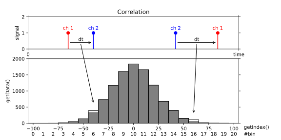Accumulates time differences between clicks on two channels into a histogram, where all ticks are considered both as “start” and “stop” clicks and both positive and negative time differences are considered.
- class Correlation(tagger, channel_1, channel_2, binwidth, n_bins)
- Parameters:
tagger (TimeTaggerBase) – time tagger object
channel_1 (int) – channel on which (stop) clicks are received
channel_2 (int) – channel on which reference clicks (start) are received (when left empty or set to
CHANNEL_UNUSED-> an auto-correlation measurement is performed, which is the same as setting channel_1 = channel_2)binwidth (int) – bin width in ps
n_bins (int) – the number of bins in the resulting histogram
- getData()
- Returns:
A one-dimensional array of size n_bins containing the histogram.
- Return type:
1D_array[int]
TimeDifferences
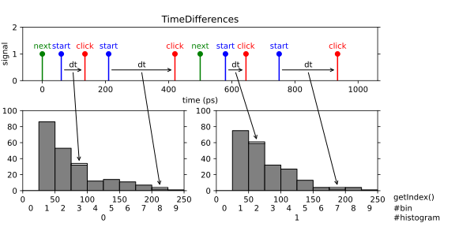A one-dimensional array of time-difference histograms with the option to include up to two additional channels that control how to step through the indices of the histogram array. This is a very powerful and generic measurement. You can use it to record consecutive cross-correlation, lifetime measurements, fluorescence lifetime imaging and many more measurements based on pulsed excitation. Specifically, the measurement waits for a tag on the start_channel, then measures the time difference between the start tag and all subsequent tags on the click_channel and stores them in a histogram. If no start_channel is specified, the click_channel is used as start_channel corresponding to an auto-correlation measurement. The histogram has a number n_bins of bins of bin width binwidth. Clicks that fall outside the histogram range are discarded. Data accumulation is performed independently for all start tags. This type of measurement is frequently referred to as ‘multiple start, multiple stop’ measurement and corresponds to a full auto- or cross-correlation measurement.
The time-difference data can be accumulated into a single histogram or into multiple subsequent histograms. In this way, you can record a sequence of time-difference histograms. To switch from one histogram to the next one you have to specify a channel that provide switch markers (next_channel parameter). Also you need to specify the number of histograms with the parameter n_histograms. After each tag on the next_channel, the histogram index is incremented by one and reset to zero after reaching the last valid index. The measurement starts with the first tag on the next_channel.
You can also provide a synchronization marker that resets the histogram index by specifying a sync_channel. The measurement starts when a tag on the sync_channel arrives with a subsequent tag on next_channel. When a rollover occurs, the accumulation is stopped until the next sync and subsequent next signal. A sync signal before a rollover will stop the accumulation, reset the histogram index and a subsequent signal on the next_channel starts the accumulation again.
Typically, you will run the measurement indefinitely until stopped by the user. However, it is also possible to specify the maximum number of rollovers of the histogram index. In this case, the measurement stops when the number of rollovers has reached the specified value.
- class TimeDifferences(tagger, click_channel, start_channel=CHANNEL_UNUSED, next_channel=CHANNEL_UNUSED, sync_channel=CHANNEL_UNUSED, binwidth=1000, n_bins=1000, n_histograms=1)
- Parameters:
tagger (TimeTaggerBase) – time tagger object instance
click_channel (int) – channel on which stop clicks are received
start_channel (int) – channel that sets start times relative to which clicks on the click channel are measured
next_channel (int) – channel that increments the histogram index
sync_channel (int) – channel that resets the histogram index to zero
binwidth (int) – binwidth in picoseconds
n_bins (int) – number of bins in each histogram
n_histograms (int) – number of histograms
Note
A rollover occurs on a next_channel event while the histogram index is already in the last histogram. If sync_channel is defined, the measurement will pause at a rollover until a sync_channel event occurs and continues at the next next_channel event. With undefined sync_channel, the measurement will continue without interruption at histogram index 0.
- getData()
- Returns:
A two-dimensional array of size n_bins by n_histograms containing the histograms.
- Return type:
2D_array[int]
- getIndex()
- Returns:
A vector of size n_bins containing the time bins in ps.
- Return type:
1D_array[int]
- setMaxCounts()
Sets the number of rollovers at which the measurement stops integrating. To integrate infinitely, set the value to 0, which is the default value.
- getHistogramIndex()
- Returns:
The index of the currently processed histogram or the waiting state. Possible return values are:
-2: Waiting for an event on sync_channel (only if sync_channel is defined)
-1: Waiting for an event on next_channel (only if next_channel is defined)
0 … (n_histograms - 1): Index of the currently processed histogram
- Return type:
- ready()
- Returns:
True when the required number of rollovers set by
setMaxCounts()has been reached.- Return type:
TimeDifferencesND
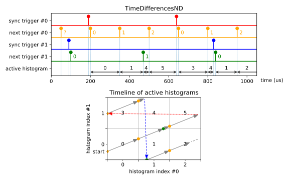This is an implementation of the TimeDifferences measurement class that extends histogram indexing into multiple dimensions.
Please read the documentation of TimeDifferences first.
It captures many multiple start - multiple stop histograms, but with many asynchronous next_channel triggers.
After each tag on each next_channel, the histogram index of the associated dimension is incremented by one and reset to zero after reaching the last valid index.
The elements of the parameter n_histograms specify the number of histograms per dimension. The
accumulation starts when next_channel has been triggered on all dimensions.
You should provide a synchronization trigger by specifying a sync_channel per dimension. It will stop the accumulation when an associated histogram index rollover occurs. A sync event will also stop the accumulation, reset the histogram index of the associated dimension, and a subsequent event on the corresponding next_channel starts the accumulation again. The synchronization is done asynchronous, so an event on the next_channel increases the histogram index even if the accumulation is stopped. The accumulation starts when a tag on the sync_channel arrives with a subsequent tag on next_channel for all dimensions.
Please use TimeTaggerBase.setInputDelay() to adjust the latency of all channels. In general, the order of the provided triggers including
maximum jitter should be:
old start trigger –> all sync triggers –> all next triggers –> new start trigger
- class TimeDifferencesND(tagger, click_channel, start_channel, next_channels, sync_channels, n_histograms, binwidth, n_bins)
- Parameters:
tagger (TimeTaggerBase) – time tagger object instance
click_channel (int) – channel on which stop clicks are received
start_channel (int) – channel that sets start times relative to which clicks on the click channel are measured
next_channels (list[int]) – vector of channels that increments the histogram index
sync_channels (list[int]) – vector of channels that resets the histogram index to zero
n_histograms (int) – vector of numbers of histograms per dimension
binwidth (int) – width of one histogram bin in ps
n_bins (int) – number of bins in each histogram
See methods of
TimeDifferencesclass.
Fluorescence-lifetime imaging (FLIM)
This section describes the FLIM related measurements classes of the Time Tagger API.
Flim
Changed in version 2.7.2.
Note
The Flim (beta) implementation is not final yet. It has a very advanced functionality, but details are subject to change. Please give us feedback (support@swabianinstruments.com) when you encounter issues or when you have ideas for additional functionality.
Fluorescence-lifetime imaging microscopy (FLIM) is an imaging technique for producing an image based on the differences in the exponential decay rate of the fluorescence from a sample.
Fluorescence lifetimes can be determined in the time domain by using a pulsed source. When a population of Fluorophores is excited by an ultrashort or delta-peak pulse of light, the time-resolved fluorescence will decay exponentially.
This measurement implements a line scan in a FLIM image that consists of a sequence of pixels. This could either represent a single line of the image, or - if the image is represented as a single meandering line - this could represent the entire image.
We provide two different classes that support FLIM measurements: Flim and FlimBase.
Flim provides a versatile high-level API. FlimBase instead provides the essential functionality with no overhead
to perform Flim measurements. FlimBase is based on a callback approach.
Please visit the Python example folder for a reference implementation.
Note
Up to version 2.7.0, the FLIM implementation was very limited and has been fully rewritten in version 2.7.2. You can use the following 1 to 1 replacement to get the old FLIM behavior:
# FLIM before version 2.7.0:
Flim(tagger, click_channel=1, start_channel=2, next_channel=3,
binwidth=100, n_bins=1000, n_pixels=320*240)
# FLIM 2.7.0 replacement using TimeDifferences
TimeDifferences(tagger, click_channel=1, start_channel=2,
next_channel=3, sync_channel=CHANNEL_UNUSED,
binwidth=100, n_bins=1000, n_histograms=320*240)
- class Flim(tagger, start_channel, click_channel, pixel_begin_channel, n_pixels, n_bins, binwidth[, pixel_end_channel=CHANNEL_UNUSED, frame_begin_channel=CHANNEL_UNUSED, finish_after_outputframe=0, n_frame_average=1, pre_initialize=True])
High-Level class for implementing FLIM measurements. The Flim class includes buffering of images and several analysis methods.
The methods are split into different groups.
The
getCurrent...references the active frame.The
getReady...references the last full frame acquired.The
getSummed...operates on all frames which have been captured so far including or excluding the current active frame via the optional parameter only_ready_frames.The
get...Exreturns instead of an array, aFlimFrameInfowhich contains more information than only the raw array.The class provides an
frameReady()callback, which can be used to analyze the data when a frame is completed.- Parameters:
tagger (TimeTaggerBase) – time tagger object instance
start_channel (int) – channel on which clicks are received for the time differences histogramming
click_channel (int) – channel on which start clicks are received for the time differences histogramming
pixel_begin_channel (int) – start marker of a pixel (histogram)
n_pixels (int) – number of pixels (histograms) of one frame
n_bins (int) – number of histogram bins for each pixel
binwidth (int) – bin size in picoseconds
pixel_end_channel (int) – end marker of a pixel - incoming clicks on the click_channel will be ignored afterward. (optional)
frame_begin_channel (int) – start the frame, or reset the pixel index. (optional)
finish_after_outputframe (int) – sets the number of frames stored within the measurement class. After reaching the number, the measurement will stop. If the number is 0, one frame is stored and the measurement runs continuously. (optional, default: 0)
n_frame_average (int) – average multiple input frames into one output frame, (optional, default: 1)
pre_initialize (bool) – initializes the measurement on constructing. (optional)
- getCurrentFrame()
- Returns:
The histograms for all pixels of the currently active frame, 2D array with dimensions [n_bins, n_pixels].
- Return type:
2D_array[int]
- getCurrentFrameEx()
- Returns:
The currently active frame.
- Return type:
- getCurrentFrameIntensity()
- Returns:
The intensities of all pixels of the currently active frame. The pixel intensity is defined by the number of counts acquired within the pixel divided by the respective integration time.
- Return type:
1D_array[float]
- getFramesAcquired()
- Returns:
The number of frames that have been completed so far, since the creation or last clear of the object.
- Return type:
- getIndex()
- Returns:
A vector of size n_bins containing the time bins in ps.
- Return type:
1D_array[int]
- getReadyFrame([index =-1])
- Parameters:
index (int) – Index of the frame to be obtained. If -1, the last frame which has been completed is returned. (optional)
- Returns:
The histograms for all pixels according to the frame index given. If the index is -1, it will return the last frame, which has been completed. When stop_after_outputframe is 0, the index value must be -1. If
index >= stop_after_outputframe, it will throw an error. 2D array with dimensions [n_bins, n_pixels]- Return type:
2D_array[int]
- getReadyFrameEx([index =-1])
- Parameters:
index (int) – Index of the frame to be obtained. If -1, the last frame which has been completed is returned. (optional)
- Returns:
The frame according to the index given. If the index is -1, it will return the last completed frame. When stop_after_outputframe is 0, index must be -1. If
index >= stop_after_outputframe, it will throw an error.- Return type:
- getReadyFrameIntensity([index =-1])
- Parameters:
index (int) – Index of the frame to be obtained. If -1, the last frame which has been completed is returned. (optional)
- Returns:
The intensities according to the frame index given. If the index is -1, it will return the intensity of the last frame, which has been completed. When stop_after_outputframe is 0, the index value must be -1. If
index >= stop_after_outputframe, it will throw an error. The pixel intensity is defined by the number of counts acquired within the pixel divided by the respective integration time.- Return type:
1D_array[float]
- getSummedFrames([only_ready_frames=True, clear_summed=False])
- Parameters:
only_ready_frames – If true, only the finished frames are added. On false, the currently active frame is aggregated. (optional)
clear_summed – If true, the summed frames memory will be cleared. (optional)
- Returns:
The histograms for all pixels. The counts within the histograms are integrated since the start or the last clear of the measurement.
- Return type:
2D_array[int]
- getSummedFramesEx([only_ready_frames=True, clear_summed=False])
- Parameters:
- Returns:
A
FlimFrameInfothat represents the sum of all acquired frames.- Return type:
- getSummedFramesIntensity([only_ready_frames=True, clear_summed=False])
- Parameters:
- Returns:
The intensities of all pixels summed over all acquired frames. The pixel intensity is the number of counts within the pixel divided by the integration time.
- Return type:
1D_array[float]
- isAcquiring()
- Returns:
A boolean which tells the user if the class is still acquiring data. It can only reach the false state for
stop_after_outputframe > 0. This should differ fromisRunning()as once rendering is done, it can’t be started again.- Return type:
- frameReady(frame_number, data, pixel_begin_times, pixel_end_times, frame_begin_time, frame_end_time)
- Parameters:
The method is called when a frame is completed. Compared to
on_frame_end(), it provides various related data when invoked.
- on_frame_end()
Virtual function which can be overwritten in C++. The method is called when a frame is completed.
FlimFrameInfo
This is a simple class that contains FLIM frame data and provides convenience accessor methods.
Note
Objects of this class are returned by the methods of the FLIM classes.
Normally user will not construct FlimFrameInfo objects themselves.
- class FlimFrameInfo
-
- getFrameNumber()
- Returns:
The frame number, starting from 0 for the very first frame acquired. If the index is -1, it is an invalid frame which is returned on error.
- Return type:
- isValid()
- Returns:
A boolean which tells if this frame is valid or not. Invalid frames are possible on errors, such as asking for the last completed frame when no frame has been completed so far.
- Return type:
- getPixelPosition()
- Returns:
A value which tells how many pixels were processed for this frame.
- Return type:
- getHistograms()
- Returns:
All histograms of the frame, 2D array with dimensions [n_bins, n_pixels].
- Return type:
2D_array[int]
- getIntensities()
- Returns:
The summed counts of each histogram divided by the integration time.
- Return type:
1D_array[float]
FlimBase
The FlimBase provides only the most essential functionality for FLIM tasks. The benefit from the reduced functionality is that it is very memory and CPU efficient.
The class provides the frameReady() callback, which must be used to analyze the data.
- class FlimBase(tagger, start_channel, click_channel, pixel_begin_channel, n_pixels, n_bins, binwidth[, pixel_end_channel=CHANNEL_UNUSED, frame_begin_channel=CHANNEL_UNUSED, finish_after_outputframe=0, n_frame_average=1, pre_initialize=True])
- Parameters:
tagger (TimeTaggerBase) – time tagger object instance
start_channel (int) – channel on which clicks are received for the time differences histogramming
click_channel (int) – channel on which start clicks are received for the time differences histogramming
pixel_begin_channel (int) – start marker of a pixel (histogram)
n_pixels (int) – number of pixels (histograms) of one frame
n_bins (int) – number of histogram bins for each pixel
binwidth (int) – bin size in picoseconds
pixel_end_channel (int) – end marker of a pixel - incoming clicks on the click_channel will be ignored afterward. (optional, default:
CHANNEL_UNUSED)frame_begin_channel (int) – start the frame, or reset the pixel index. (optional, default:
CHANNEL_UNUSED)finish_after_outputframe (int) – sets the number of frames stored within the measurement class. After reaching the number, the measurement will stop. If the number is 0 , one frame is stored and the measurement runs continuously. (optional, default: 0)
n_frame_average (int) – average multiple input frames into one output frame. (optional, default: 1)
pre_initialize (bool) – initializes the measurement on constructing. (optional, default: True)
- isAcquiring()
- Returns:
A boolean which tells the user if the class is still acquiring data. It can only reach the false state for
stop_after_outputframe > 0. This should differ fromisRunning()as once rendering is done, it can’t be started again.- Return type:
- frameReady(frame_number, data, pixel_begin_times, pixel_end_times, frame_begin_time, frame_end_time)
- Parameters:
The method is called when a frame is completed. Compared to
on_frame_end(), it provides various related data when invoked.
- on_frame_end()
Virtual function which can be overwritten in C++. The method is called when a frame is completed.
Frequency analysis
FrequencyStability
Frequency Stability Analysis is used to characterize periodic signals and to identify sources of deviations from the perfect periodicity.
It can be employed to evaluate the frequency stability of oscillators, for example.
A set of established metrics provides insights into the oscillator characteristics on different time scales.
The most prominent metric is the Allan Deviation (ADEV). The FrequencyStability class executes the calculation of
often used metrics in parallel and conforms to the IEEE 1139 standard. For more information, we recommend the
Handbook of Frequency Stability Analysis.
The calculated deviations are the root-mean-square 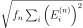 of a specific set of
error samples 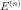 with a normalization factor 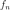.
The step size 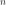 together with the oscillator period 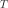 defines the time span 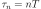
that is investigated by the sample.
The error samples are calculated from the phase samples 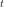 that are generated by the
FrequencyStability class by averaging over the timestamps of a configurable number of time-tags.
To investigate the averaged phase samples directly, a trace of configurable length is stored to display the
current evolution of frequency and phase errors.
Each of the available deviations has its specific sample .
For example, the Allan Deviation investigates the second derivative of the phase using the sample
.
The full formula of the Allan deviation for a set of  averaged timestamps is
averaged timestamps is

The deviations can be displayed in the Allan domain or in the time domain.
For the time domain, the Allan domain data is multiplied by a factor proportional to 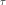.
This means that in a log-log plot, all slopes of the time domain curves are increased by +1 compared to the Allan ones.
The factor  for ADEV/MDEV and 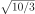 for HDEV, respectively, is used so that the scaled deviations of a white phase noise distortion correspond to the standard deviation of the averaged timestamps .
In some cases, there are different established names for the representations.
The
for ADEV/MDEV and 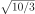 for HDEV, respectively, is used so that the scaled deviations of a white phase noise distortion correspond to the standard deviation of the averaged timestamps .
In some cases, there are different established names for the representations.
The FrequencyStability class provides numerous metrics for both domains:
Allan domain
Time domain
Standard Deviation (STDD)
Allan Deviation (ADEV)
ADEVScaled = 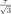 ADEV
Modified Allan Deviation (MDEV)
Time Deviation TDEV = MDEV
Hadamard Deviation (HDEV )
HDEVScaled = 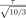 HDEV
- class FrequencyStability(tagger, channel, steps, average, trace_len)
- Parameters:
channel (int) – The input channel number.
steps (list[int]) – The step sizes to consider in the calculation. The length of the list determines the maximum number of data points. Because the oscillator frequency is unknown, it is not possible to define directly.
average (int) – The number of time-tags to average internally. This downsampling allows for a reduction of noise and memory requirements. Default is 1000.
trace_len (int) – Number of data points in the phase and frequency error traces, calculated from averaged data. The trace always contains the latest data. Default is 1000.
Note
Use average and
TimeTagger.setEventDivider()with care: The event divider can be used to save USB bandwidth. If possible, transfer more data via USB and use average to improve your results.- getDataObject()
- Returns:
An object that allows access to the current metrics
- Return type:
- class FrequencyStabilityData
- getTau()
The axis for all deviations. This is the product of the steps parameter of the
FrequencyStabilitymeasurement and the measured average period of the signal.- Returns:
The values.
- Return type:
1D_array[float]
- getADEV()
The overlapping Allan deviation, the most common analysis framework. In a log-log plot, the slope allows one to identify the type of noise:
-1: white or flicker phase noise like discretization or analog noisy delay
-0.5: white period noise
0: flicker period noise like electric noisy oscillator
0.5: integrated white period noise (random walk period)
1: frequency drift, e.g., induced thermally
- Sample:
- Domain:
Allan domain
- Returns:
The overlapping Allan Deviation.
- Return type:
1D_array[float]
- getMDEV()
Modified overlapping Allan deviation. It averages the second derivate before calculating the RMS. This splits the slope of white and flicker phase noise:
-1.5: white phase noise, like discretization
-1.0: flicker phase noise, like an electric noisy delay
The metric is more commonly used in the time domain, see
getTDEV().- Sample:
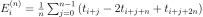
- Domain:
Allan domain
- Returns:
The overlapping Modified Allan Deviation.
- Return type:
1D_array[float]
- getHDEV()
The overlapping Hadamard deviation uses the third derivate of the phase. This cancels the effect of a constant phase drift and converges for more divergent noise sources at higher slopes:
1: integrated flicker period noise (flicker walk period)
1.5: double integrated white period noise (random run period)
It is scaled to match the ADEV for white period noise.
- Sample:
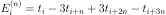
- Domain:
Allan domain
- Returns:
The overlapping Hadamard Deviation.
- Return type:
1D_array[float]
- getSTDD()
Caution
The standard deviation is not recommended as a measure of frequency stability because it is non-convergent for some types of noise commonly found in frequency sources, most noticeable the frequency drift.
Standard deviation of the periods.
- Sample:
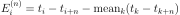
- Domain:
Time domain
- Returns:
The standard deviation.
- Return type:
1D_array[float]
- getADEVScaled()
- getTDEV()
The Time Deviation (TDEV) is the common representation of the Modified overlapping Allan deviation
getMDEV(). Taking the log-log slope +1 and the splitting of the slope of white and flicker phase noise into account, it allows an easy identification of the two contributions:-0.5: white phase noise, like discretization
0: flicker phase noise, like an electric noisy delay
- getHDEVScaled()
Caution
While HDEV is scaled to match ADEV for white period noise, this function is scaled to match the TDEV for white phase noise. The difference of period vs phase matching is roughly 5% and easy to overlook.
- getTraceIndex()
The time axis for
getTracePhase()andgetTraceFrequency().- Returns:
The time index in seconds of the phase and frequency error trace.
- Return type:
1D_array[float]
- getTracePhase()
Provides the time offset of the averaged timestamps from a linear fit over the last trace_len averaged timestamps.
- Returns:
A trace of the last trace_len phase samples in seconds.
- Return type:
1D_array[float]
- getTraceFrequency()
Provides the relative frequency offset from the average frequency during the last trace_len + 1 averaged timestamps.
- Returns:
A trace of the last trace_len normalized frequency error data points in pp1.
- Return type:
1D_array[float]
Time-tag-streaming
Measurement classes described in this section provide direct access to the time tag stream with minimal or no pre-processing.
Time tag format
The time tag contain essential information about the detected event and have the following format:
Size |
Type |
Description |
|---|---|---|
8 bit |
enum |
overflow type |
8 bit |
– |
reserved |
16 bit |
uint16 |
number of missed events |
32 bit |
int32 |
channel number |
64 bit |
int64 |
time in ps from device start-up |
FileWriter
Writes the time-tag-stream into a file in a structured binary format with a lossless compression. The estimated file size requirements are 2-4 Bytes per time tag, not including the container the data is stored in.
The continuous background data rate for the container can be modified via TimeTagger.setStreamBlockSize(). Data is processed in blocks and each block header has a size of 160 Bytes. The default processing latency is 20 ms, which means that a block is written every 20 ms resulting in a background data rate of 8 kB/s. By increasing the processing latency via setStreamBlockSize(max_events=524288, max_latency=1000) to 1 s, the resulting data rate for the container is reduced to one 160 B/s.
The files created with FileWriter measurement can be read using FileReader or loaded into the Virtual Time Tagger.
Note
You can use the Dump for dumping into a simple uncompressed binary format.
However, you will not be able to use this file with Virtual Time Tagger or FileReader.
The FileWriter is able to split the data into multiple files seamlessly
when the file size reaches a maximal size. For the file splitting to work properly, the filename specified by the user will be extended with a suffix containing sequential counter, so the filenames will look like in the following example
fw = FileWriter(tagger, 'filename.ttbin', [1,2,3]) # Store tags from channels 1,2,3
# When splitting occurs the files with following names will be created
# filename.ttbin # the sequence header file with no data blocks
# filename.1.ttbin # the first file with data blocks
# filename.2.ttbin
# filename.3.ttbin
# ...
In addition, the FileWriter will query and store the configuration of the Time Tagger in the same format as returned by the
TimeTaggerBase.getConfiguration() method. The configuration is always written into every file.
See also: FileReader, The TimeTaggerVirtual class, and mergeStreamFiles().
- class FileWriter(tagger, filename, channels)
- Parameters:
tagger (TimeTaggerBase) – time tagger object
filename (str) – name of the file to store to
channels (list[int]) – non-empty list of real or virtual channels
Class constructor. As with all other measurements, the data recording starts immediately after the class instantiation unless you initialize the
FileWriterwith aSynchronizedMeasurements.Note
Compared to the
Dumpmeasurement, theFileWriterrequires explicit specification of the channels. If you want to store timetags from all input channels, you can query the list of all input channels withTimeTagger.getChannelList().- split([new_filename=""])
Close the current file and create a new one. If the new_filename is provided, the data writing will continue into the file with the new filename and the sequence counter will be reset to zero.
You can force the file splitting when you call this method without parameter or when the new_filename is an empty string.
- Parameters:
new_filename (str) – filename of the new file.
- setMaxFileSize(max_file_size)
Set the maximum file size on disk. When this size is exceeded a new file will be automatically created to continue recording. The actual file size might be larger by one block. (default: ~1 GByte)
- getMaxFileSize()
- Returns:
The maximal file size. See also
FileWriter.setMaxFileSize().- Return type:
FileReader
This class allows you to read data files store with FileReader. The FileReader reads a data block of the specified size into a TimeTagStreamBuffer object and returns this object. The returned data object is exactly the same as returned by the TimeTagStream measurement and allows you to create a custom data processing algorithms that will work both, for reading from a file and for the on-the-fly processing.
The FileReader will automatically recognize if the files were split and read them too one by one.
Example:
# Lets assume we have following files created with the FileWriter
# measurement.ttbin # sequence header file with no data blocks
# measurement.1.ttbin # the first file with data blocks
# measurement.2.ttbin
# measurement.3.ttbin
# measurement.4.ttbin
# another_meas.ttbin
# another_meas.1.ttbin
# Read all files in the sequence 'measurement'
fr = FileReader("measurement.ttbin")
# Read only the first data file
fr = FileReader("measurement.1.ttbin")
# Read only the first two files
fr = FileReader(["measurement.1.ttbin", "measurement.2.ttbin"])
# Read the sequence 'measurement' and then the sequence 'another_meas'
fr = FileReader(["measurement.ttbin", "another_meas.ttbin"])
See also: FileWriter, The TimeTaggerVirtual class, and mergeStreamFiles().
- class FileReader(filenames)
This is the class constructor. The
FileReaderautomatically continues to read files that were split by theFileWriter.- getData(size_t n_events)
Reads the next n_events and returns the buffer object with the specified number of timetags. The FileReader stores the current location in the data file and guarantees that every timetag is returned once. If less than n_elements are returned, the reader has reached the end of the last file in the file-list filenames. To check if more data is available for reading, it is more convenient to use
hasData().- Parameters:
n_events (int) – Number of timetags to read from the file.
- Returns:
A buffer of size n_events.
- Return type:
- hasData()
- Returns:
True if more data is available for reading, False if all data has been read from all the files specified in the class constructor.
- Return type:
- getConfiguration()
Dump
Deprecated since version 2.6.0: please use FileWriter instead.
Warning
The files created with this class are not readable by
TimeTaggerVirtual and FileReader.
Writes the timetag stream into a file in a simple uncompressed binary format that store timetags as 128bit records, see Time tag format.
Please visit the programming examples provided in the installation folder of how to dump and load data.
- class Dump(tagger, filename, max_tags, channels)
- Parameters:
tagger (TimeTaggerBase) – time tagger object instance
filename (str) – name of the file to dump to
max_tags (int) – stop after this number of tags has been dumped. Negative values will dump forever
channels (list[int]) – list of real or virtual channels which are dumped to the file (when empty or not passed all active channels are dumped)
- clear()
Delete current data in the file and restart data storage.
- stop()
Stops data recording and closes data file.
Scope
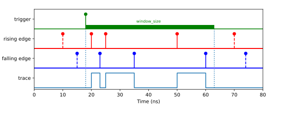The Scope class allows to visualize time tags for rising and falling edges in a time trace diagram similarly to an ultrafast logic analyzer. The trace recording is synchronized to a trigger signal which can be any physical or virtual channel. However, only physical channels can be specified to the event_channels parameter. Additionally, one has to specify the time window_size which is the timetrace duration to be recorded, the number of traces to be recorded and the maximum number of events to be detected. If n_traces < 1 then retriggering will occur infinitely, which is similar to the “normal” mode of an oscilloscope.
Note
Scope class implicitly enables the detection of positive and negative edges for every physical channel specified in event_channels. This accordingly doubles the data rate requirement per input.
- class Scope(tagger, event_channels=[], trigger_channel, window_size, n_traces, n_max_events)
- Parameters:
tagger (TimeTagger) – TimeTagger object
trigger_channel (int) – Channel number of the trigger signal
window_size (int) – Time window in picoseconds
n_traces (int) – Number of trigger events to be detected
n_max_events (int) – Max number of events to be detected
- getData()
Returns a tuple of the size equal to the number of event_channels multiplied by n_traces, where each element is a tuple of
Event.
- ready()
- Returns:
Returns whether the acquisition is complete which means that all traces (n_traces) are acquired.
- Return type:
Sampler
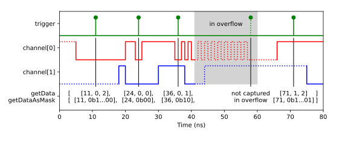The Sampler class allows sampling the state of a set of channels via a trigger channel.
For every event on the trigger input, the current state (low: 0, high: 1, unknown: 2) will be written to an internal buffer. Fetching the data of the internal buffer will clear its internal buffer, so every event will be returned only once.
Time Tagger detects pulse edges and therefore a channel will be in the unknown state until an edge detection event was received on that channel from the start of the measurement or after an overflow. The internal processing assumes that no event could be received within the channel’s deadtime otherwise invalid data will be reported until the next event on this input channel.
The maximum number of channels is limited to 63 for one Sampler instance.
- class Sampler(tagger, trigger, channels, max_trigger)
- Parameters:
tagger (TimeTagger) – TimeTagger object
trigger (int) – Channel number of the trigger signal
max_trigger (int) – The number of triggers and their respective sampled data, which is stored within the measurement class.
- getData()
Returns and removes the stored data as a 2D array (n_triggers x (1+n_channels)):
[ [timestamp of first trigger, state of channel 0, state of channel 1, ...], [timestamp of second trigger, state of channel 0, state of channel 1, ...], ... ]
Where state means:
0: low 1: high 2: undefined (after overflow)
- Returns:
sampled data
- Return type:
2D_array[int]
- getDataAsMask()
Returns and removes the stored data as a 2D array (n_triggers x 2):
[ [timestamp of first trigger, (state of channel 0) << 0 | (state of channel 1) << 1 | ... | any_undefined << 63], [timestamp of second trigger, (state of channel 0) << 0 | (state of channel 1) << 1 | ... | any_undefined << 63], ... ]
Where state means:
0: low or undefined (after overflow) 1: high
If the highest bit (data[63]) is marked, one of the channels has been in an undefined state.
- Returns:
sampled data
- Return type:
2D_array[int]
Helper classes
SynchronizedMeasurements
The SynchronizedMeasurements class allows for synchronizing multiple measurement classes in a way that ensures all these measurements to start, stop simultaneously and operate on exactly the same time tags.
You can pass a Time Tagger proxy-object returned by SynchronizedMeasurements.getTagger() to every measurement you create. This will simultaneously disable their autostart and register for synchronization.
- class SynchronizedMeasurements(tagger)
- Parameters:
tagger (TimeTaggerBase) – TimeTagger object
- registerMeasurement(measurement)
Registers the measurement object into a pool of the synchronized measurements.
Note
Registration of the measurement classes with this method does not synchronize them. In order to start/stop/clear these measurements synchronously, call these functions on the
SynchronizedMeasurementsobject after registering the measurement objects, which should be synchronized.- Parameters:
measurement – Any measurement (
IteratorBase) object.
- unregisterMeasurement(measurement)
Unregisters the measurement object out of the pool of the synchronized measurements.
Note
This method does nothing if the provided measurement is not currently registered.
- Parameters:
measurement – Any measurement (
IteratorBase) object.
- startFor(duration[, clear=True])
Calls
startFor()for every registered measurement in a synchronized way.
- isRunning()
Calls
isRunning()for every registered measurement and returns true if any measurement is running.
- getTagger()
Returns a proxy tagger object which can be passed to the constructor of a measurement class to register the measurements at initialization to the synchronized measurement object. Those measurements will not start automatically.
Note
The proxy tagger object returned by
getTagger()is not identical with theTimeTaggerobject created bycreateTimeTagger(). You can create synchronized measurements with the proxy object the following way:tagger = TimeTagger.createTimeTagger() syncMeas = TimeTagger.SynchronizedMeasurements(tagger) taggerSync = syncMeas.getTagger() counter = TimeTagger.Counter(taggerSync, [1, 2]) countrate = TimeTagger.Countrate(taggerSync, [3, 4])
Passing tagger as a constructor parameter would lead to the not synchronized behavior.
Custom Measurements
The class CustomMeasurement allows you to access the raw time tag stream with very little overhead.
By inheriting from CustomMeasurement, you can implement your fully customized measurement class. The CustomMeasurement.process() method of this class
will be invoked as soon as new data is available.
Note
This functionality is only available for C++, C# and Python.
You can find examples of how to use the CustomMeasurement in your examples folder.
- class CustomMeasurement(tagger)
- Parameters:
tagger (TimeTaggerBase) – TimeTagger object
The constructor of the
CustomMeasurementclass itself takes only the parameter tagger. When you sub-class your own measurement, you can add to your constructor any parameters that are necessary for your measurement. You can find detailed examples in your example folder.- process(incoming_tags, begin_time, end_time)
- Parameters:
incoming_tags – Tag[][struct{type, missed_events, channel, time}], the chunk of time-tags to be processed in this call of
process(). This is an external reference that is shared with other measurements and might be overwritten for the next call. So if you need to store tags, create a copy.begin_time (int) – The begin time of the data chunk.
end_time (int) – The end time of the data chunk
Override the
process()method to include your data processing. The method will be called by the Time Tagger backend when a new chunk of time-tags is available. You are free to execute any code you like, but be aware that this is the critical part when it comes to performance. In Python, it is advisable to usenumpy.array()for calculation or even pre-compiled code with Numba if an explicit iteration of the tags is necessary. Check the examples in your examples folder carefully on how to design theprocess()method.Note
In Python, the incoming_tags are a structured Numpy array. You can access single tags as well as arrays of tag entries directly:
first_tag = incoming_tags[0] all_timestamps = incoming_tags['time']
- mutex
Context manager object (see Context Manager Types) that locks the mutex when used and automatically unlocks it when the code block exits. For example, it is intended for use with Python’s “with” keyword as
class MyMeasurement(CustomMeasurement): def getData(self): # Acquire a lock for this instance to guarantee that # self.data is not modified in other parallel threads. # This ensures to return a consistent data. with self.mutex: return self.data.copy()